Kiosco · sistema de ventas, caja y stock
Guía rápida para trabajar en el local
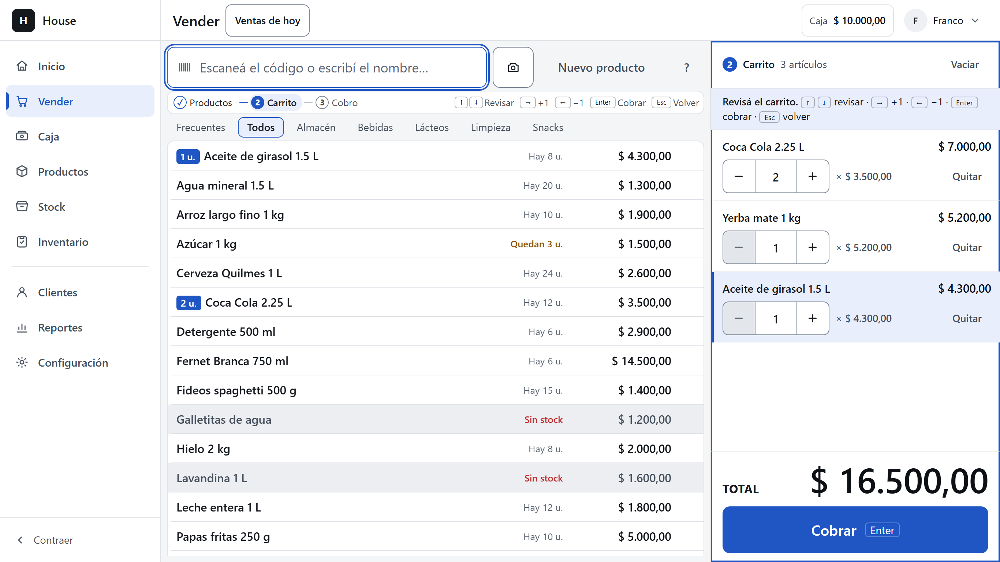
Versión de octubre de 2026
Kiosco se usa desde el navegador. No hay que instalar nada.
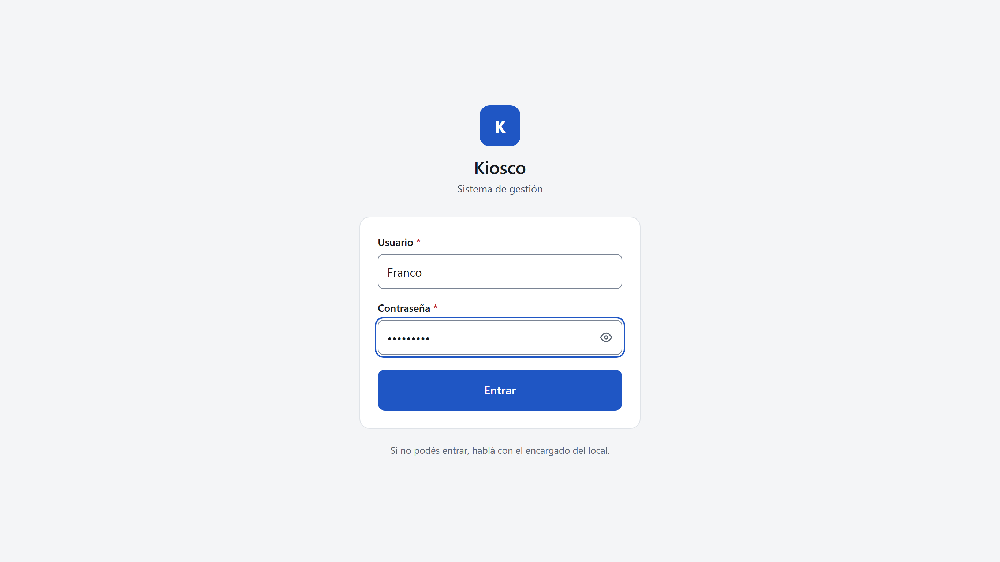
1 · Entrar al sistema
La primera vez que entrás, el sistema te pide cambiar la contraseña inicial por una tuya. Hasta que no lo hagas no vas a ver el menú.
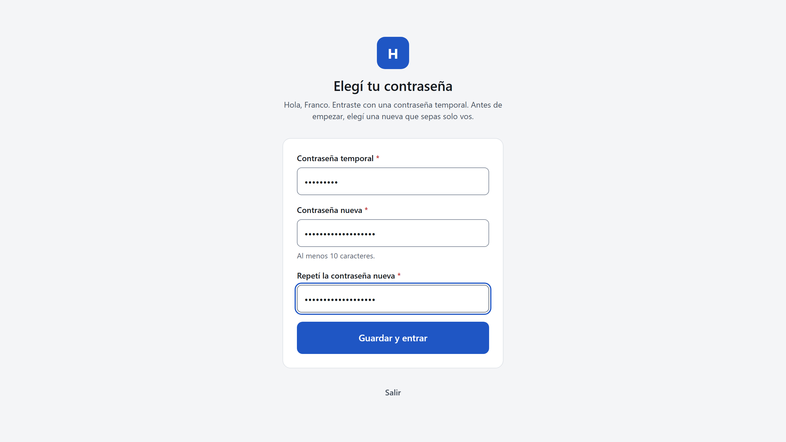
1 · Entrar al sistema
| Si querés… | Hacé esto |
|---|---|
| Salir del sistema | Tocá tu nombre, arriba a la derecha, y elegí Cerrar sesión. |
| Cambiar tu contraseña más adelante | Andá a Configuración, buscá Contraseña y tocá Cambiar contraseña. |
| Recuperar una contraseña olvidada | Pedile al responsable del sistema que la restablezca. Al entrar vas a elegir una nueva. |
| Entrar después de equivocarte varias veces | El sistema te hace esperar 15 minutos. Esperá y probá de nuevo con cuidado. |
| Seguir trabajando si dice que la sesión venció | Volvé a entrar con tu usuario y contraseña. Lo que estabas vendiendo no se cobró. |
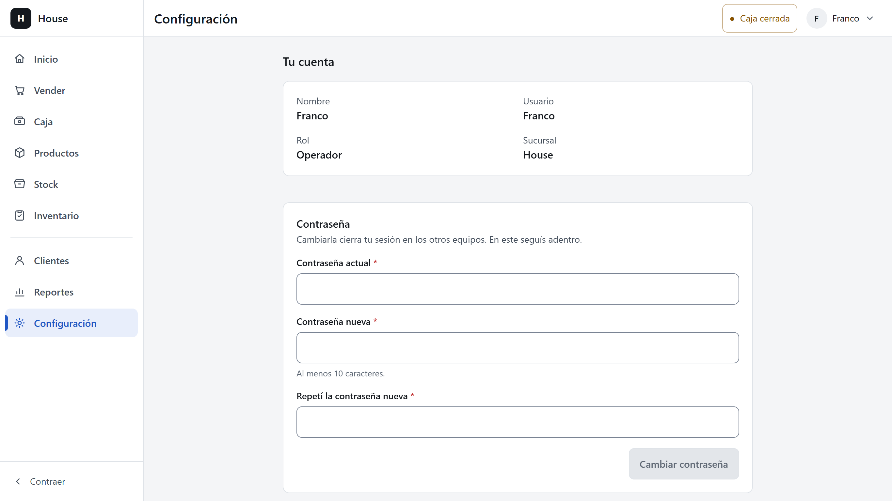
Al entrar vas a ver Inicio. A la izquierda está el menú: desde ahí vas a todas las partes del sistema.
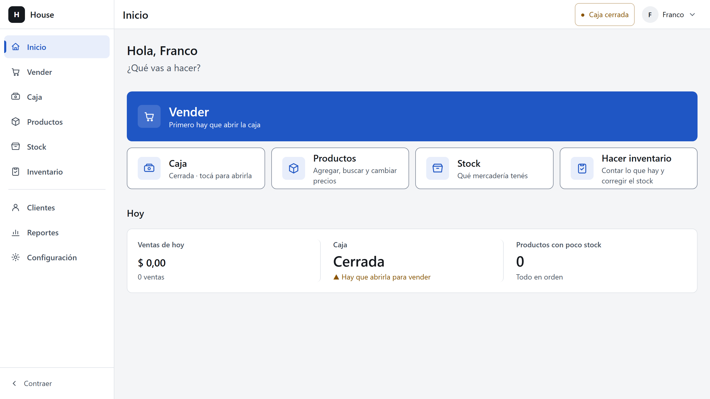
| Vender | Para cobrarle a un cliente. Es la pantalla que más vas a usar. |
|---|---|
| Caja | Abrir y cerrar la caja, anotar la plata que entra o sale y ver cuánto tiene que haber en el cajón. |
| Productos | La lista de lo que se vende. Para cargar productos nuevos y cambiar precios. |
| Stock | Cuánto queda de cada producto, qué se está terminando y la mercadería que llega. |
| Inventario | Para contar la mercadería y corregir lo que dice el sistema. |
| Clientes | Los clientes con cuenta (fiado) y cuánto debe cada uno. |
| Reportes | Cuánto se vendió, cómo se pagó, qué se vendió más y cómo cerraron las cajas. |
| Configuración | Tus datos y el cambio de contraseña. |
Antes de vender hay que abrir la caja: decirle al sistema con cuánta plata empieza el cajón.
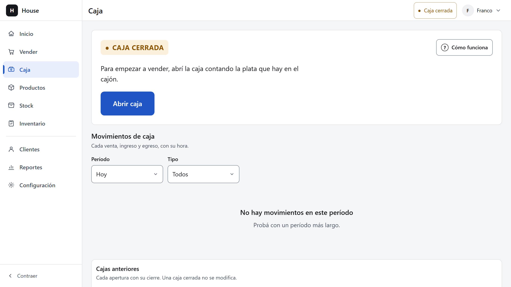
3 · Empezar el día
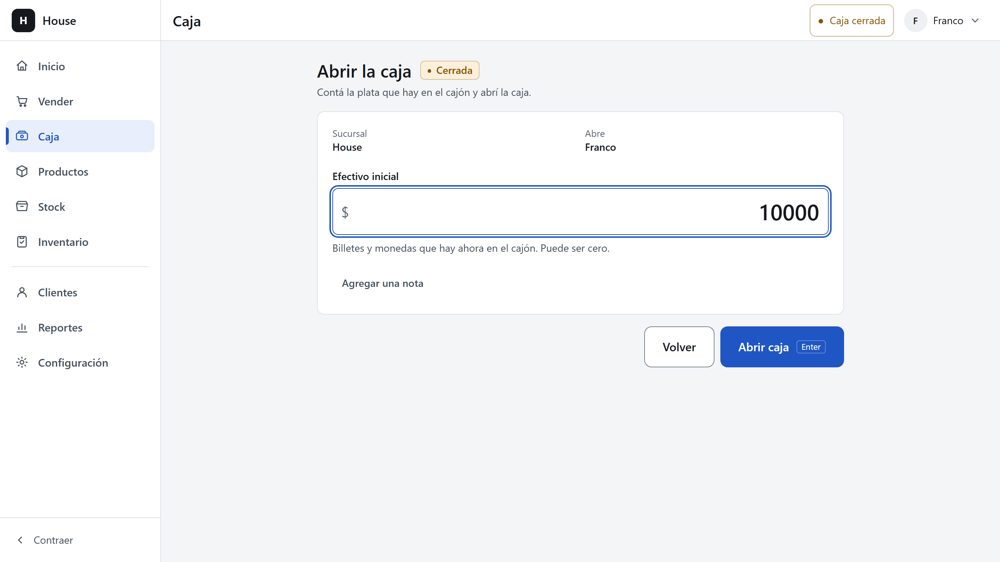
En el cajón hay 4 billetes de $2.000, 1 billete de $1.000 y $1.000 en monedas.
$8.000 + $1.000 + $1.000 = $10.000
En Efectivo inicial escribís 10000 y tocás Abrir caja.
El local empieza sin productos cargados. Cada producto se carga una sola vez; después lo vendés escaneándolo o buscándolo por el nombre.
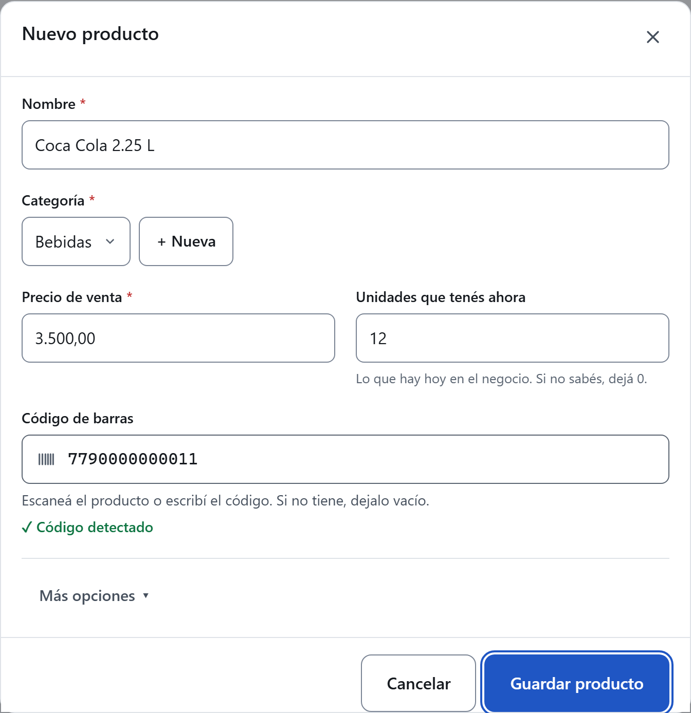
| Nombre | Coca Cola 2.25 L |
|---|---|
| Categoría | Bebidas |
| Precio de venta | $3.500 |
| Unidades que tenés ahora | 12 |
| Código de barras | escanear la botella con el lector |
4 · Cargar productos
| Con el lector | El lector funciona como un teclado. Hacé clic en Código de barras y pasá el producto: el número aparece solo y abajo dice ✓ Código detectado. |
|---|---|
| A mano | Si el lector no lo lee, escribí los números que están debajo de las barras. |
| Sin código | Si el producto no tiene código (algo suelto o hecho en el local), dejá el campo vacío. Lo vas a vender buscándolo por el nombre. |
| Ya cargado | Si aparece «Ese código ya lo tiene…», ese producto ya existe: no lo cargues de nuevo. |
Sirve para ordenar la lista y para filtrar en Vender, en Stock y en el inventario. Usá pocas y claras: Bebidas, Almacén, Lácteos, Limpieza, Golosinas, Fiambrería. Para crear una nueva desde el producto: + Nueva → escribí el nombre → Crear.
Abajo del formulario, Más opciones tiene datos que no hacen falta para empezar: si el producto se vende por kilo, cuándo avisarte que quedan pocas unidades y una descripción.
4 · Cargar productos
Lo más ordenado es ir producto por producto, una góndola o un estante a la vez:
Si un producto viene en varios tamaños o sabores con códigos distintos, cargá cada uno por separado. Al terminar, mirá Stock para confirmar las cantidades.
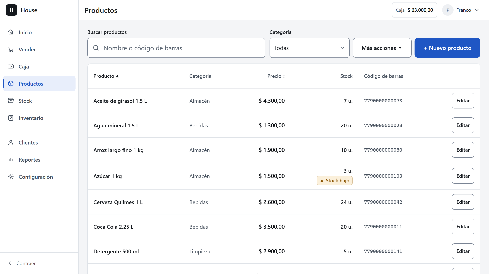
Una venta tiene tres pasos, que el sistema muestra arriba de la lista.
Buscar y agregar lo que lleva el cliente
Revisar cantidades y total
Elegir cómo paga y confirmar
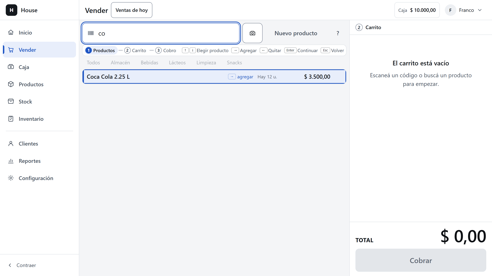
| escribir letras | buscar el producto (alcanzan unas letras) |
| ↑ ↓ | elegir un producto de la lista |
| → | agregar una unidad |
| ← | quitar una unidad |
| Enter | ir al carrito |
| Esc | borrar la búsqueda o volver |
5 · Hacer una venta
Pasá el producto por el lector: el sistema lee el código, apreta Enter solo y agrega una unidad. Si lleva dos, pasalo dos veces. No hace falta tocar nada más: podés seguir pasando productos.
| ↑ ↓ | revisar los productos del carrito |
| → | sumar uno |
| ← | quitar uno (si llega a cero, el producto sale del carrito) |
| Enter | cobrar |
| Esc | volver a productos |
Con el mouse también: los botones − y + cambian la cantidad, Quitar saca un producto y Vaciar borra todo el carrito.
5 · Hacer una venta
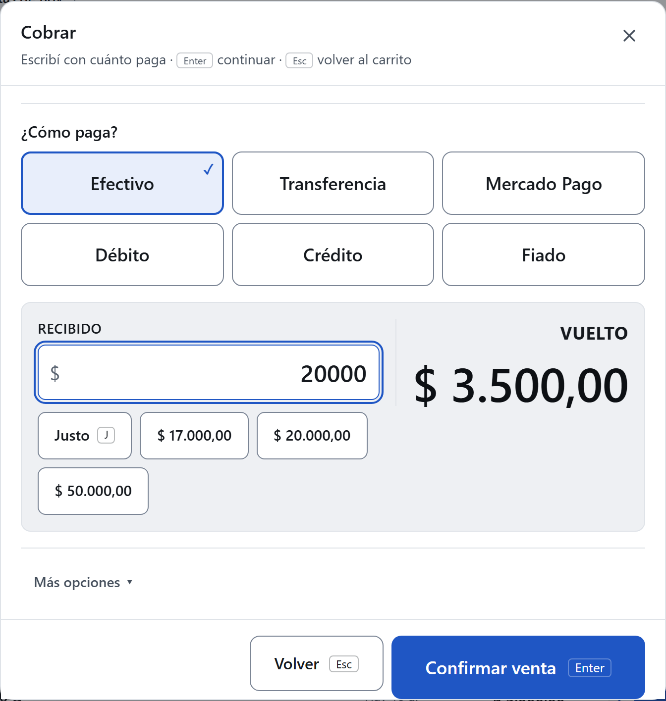
| tocar | elegir la forma de pago |
| escribir | cuánto te da el cliente |
| Enter | continuar / confirmar |
| Esc | volver al carrito |
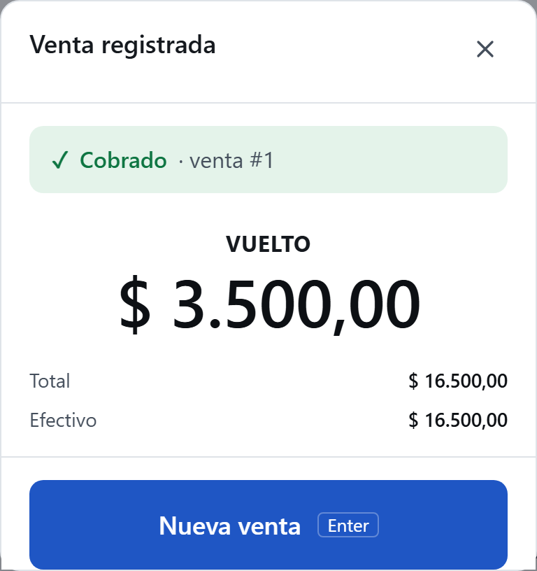
Se eligen en el cobro, en ¿Cómo paga?
| Efectivo | Billetes y monedas. Pide Recibido y muestra el Vuelto. Es lo único que entra al cajón. |
|---|---|
| Transferencia | El cliente transfiere a la cuenta del local. Confirmá la venta cuando veas que la plata llegó. |
| Mercado Pago | El cliente paga con el QR o con la aplicación. Confirmá cuando veas el pago aprobado. |
| Débito | Con tarjeta de débito, en el posnet. |
| Crédito | Con tarjeta de crédito, en el posnet. |
| Fiado | Queda anotado en la cuenta del cliente para que pague después. Solo para los clientes que habilitó el responsable. Si el cliente no aparece, pedile al responsable que lo cargue. |
Aparecen solo con Efectivo. Recibido es lo que te da el cliente; Vuelto es lo que le devolvés.
En Vender, al lado del título, está el botón Ventas de hoy. Muestra todas las ventas del día, de la más nueva a la más vieja.
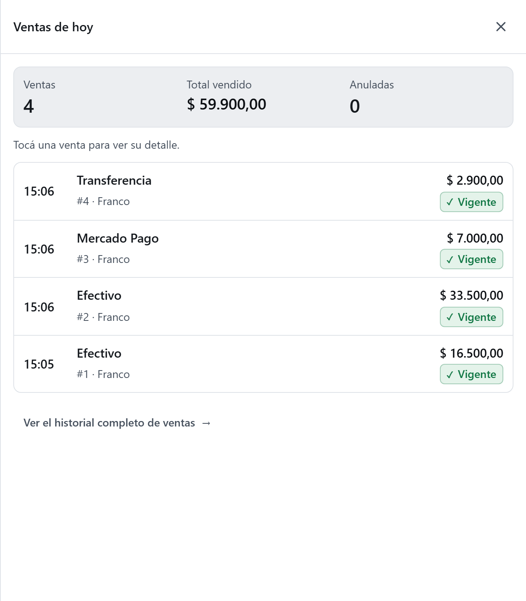
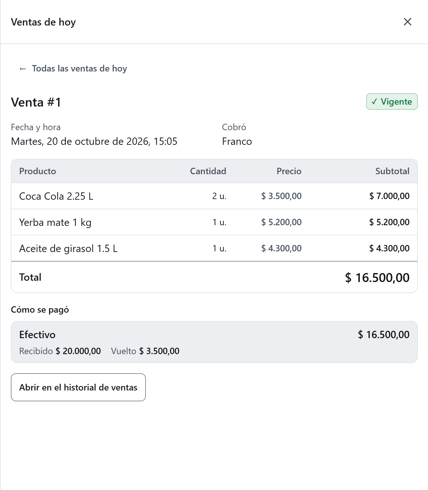
La caja es el registro de la plata del cajón durante tu turno: con cuánto empezaste, qué entró y qué salió.
| Abrir la caja | Empezar el turno contando el cajón y diciéndole al sistema cuánto hay. |
|---|---|
| Monto inicial | La plata que había en el cajón al abrir. |
| Ventas en efectivo | Lo que se cobró en efectivo desde que se abrió. |
| Ingresos | Plata que entra al cajón y no es una venta. Ejemplo: el cambio que trae el dueño. |
| Egresos | Plata que sale del cajón. Ejemplo: el pago al panadero. |
| Tiene que haber en el cajón | Lo que el sistema calcula que tendría que haber. Se compara con lo que contás. |
| Monto inicial | $10.000 | |
| + | Ventas en efectivo | $50.000 |
| + | Ingreso (cambio que trajo el dueño) | $5.000 |
| − | Egreso (pago al panadero) | $2.000 |
| = | Tiene que haber en el cajón | $63.000 |
8 · La caja
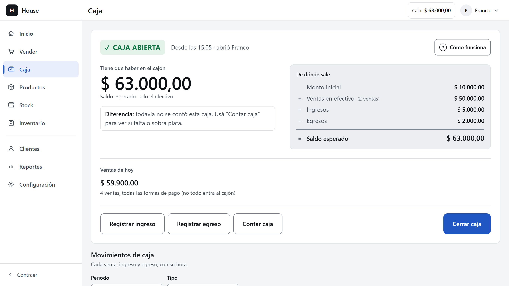
Más abajo están los movimientos de caja (cada venta, ingreso y egreso con su hora) y las cajas anteriores. El botón Cómo funciona explica todo esto en la misma pantalla.
8 · La caja
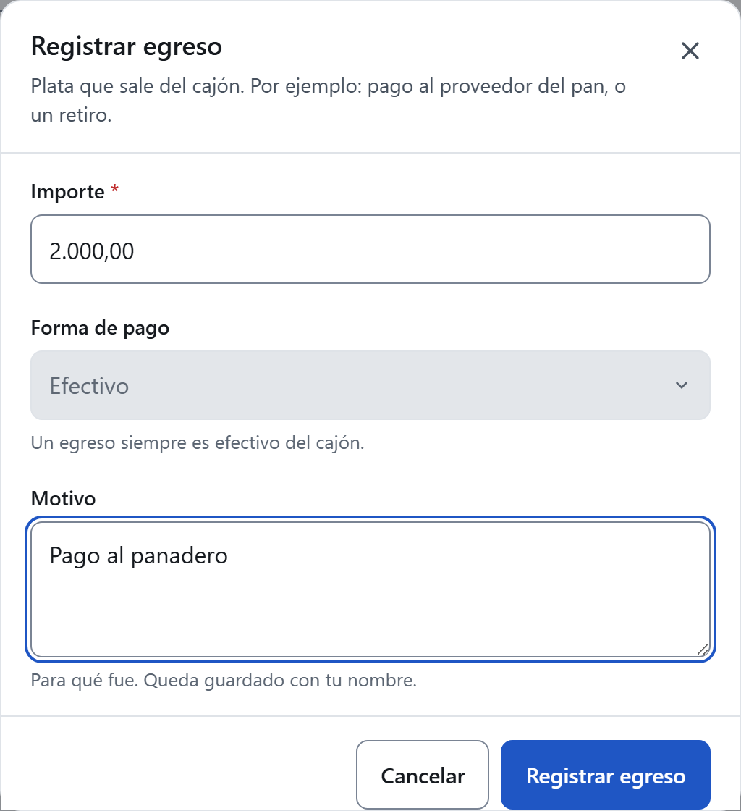
Sirve para controlar en medio del día. Tocá Contar caja, contá los billetes y monedas, escribí el total en Efectivo contado y tocá Guardar conteo. Arriba vas a ver si cuadra, si falta o si sobra. La caja sigue abierta.
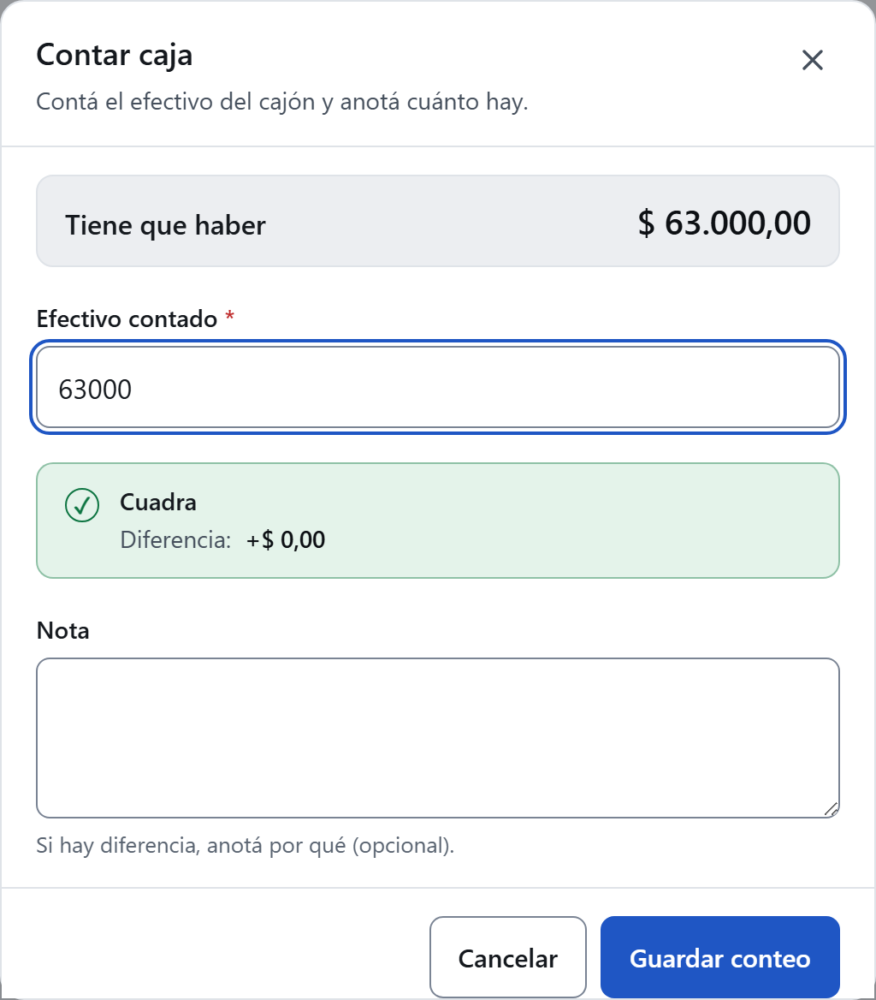
Al terminar el turno se cuenta la plata del cajón y se compara con lo que dice el sistema.
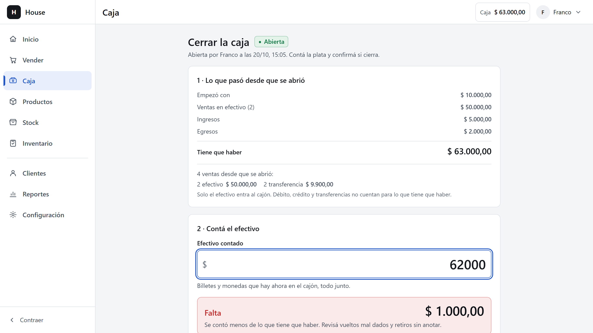
9 · Contar y cerrar la caja
| Diferencia | Qué muestra | Qué significa |
|---|---|---|
| $0 | Cuadra | Está correcto: hay lo que tiene que haber. |
| negativa (−) | Falta | Hay menos plata de la que tendría que haber. |
| positiva (+) | Sobra | Hay más plata de la que tendría que haber. |
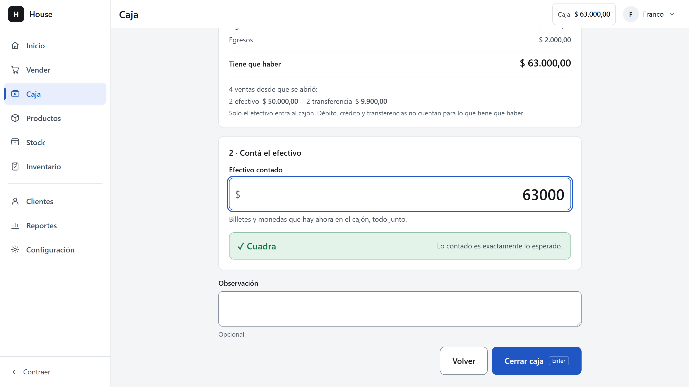
Una caja cerrada no se puede modificar. Si al cerrar aparece Hace falta un encargado, no la cierres vos: llamá al responsable.
Muestra cuánto hay de cada producto. Baja solo con cada venta.
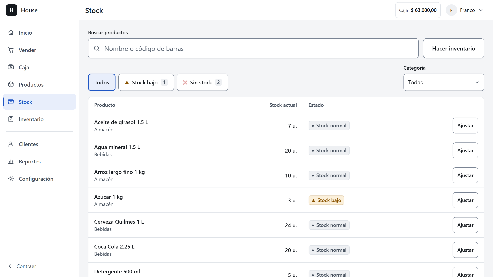
| ● Stock normal | Hay suficiente. |
| ▲ Stock bajo | Quedan pocas unidades: hay que reponer. En Vender se ve como «Quedan 3 u.». |
| ✕ Sin stock | No queda ninguna. En Vender aparece en rojo. |
Para buscar un producto, escribí parte del nombre o el código en Buscar productos. Los botones Stock bajo y Sin stock muestran solo lo que hay que reponer, y Categoría filtra por góndola.
10 · Stock
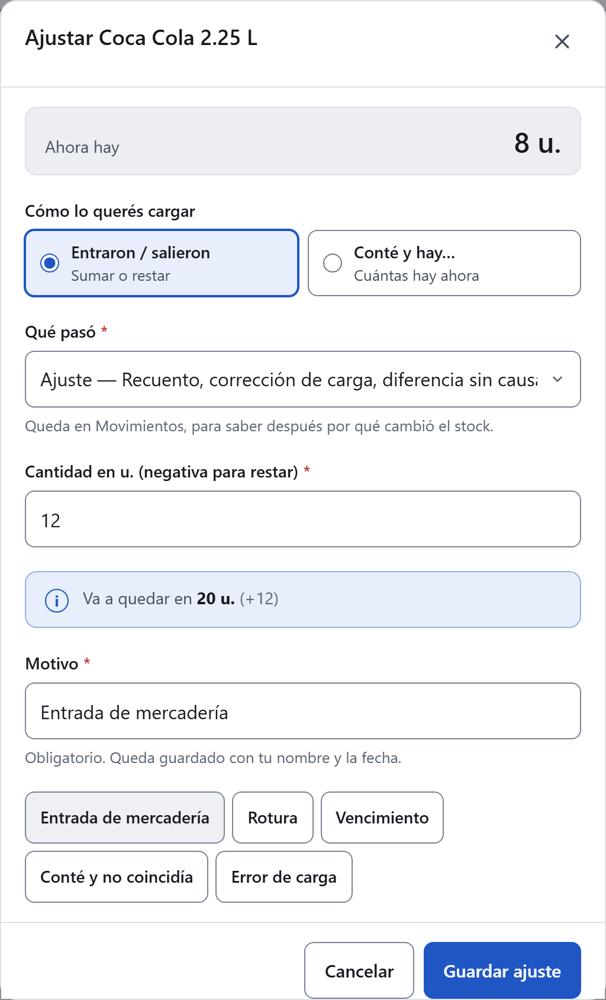
Inventario sirve para comprobar que lo que hay físicamente en el negocio coincida con lo que dice el sistema.
Elegir qué contar
Producto por producto
Ver las diferencias
Corregir el stock
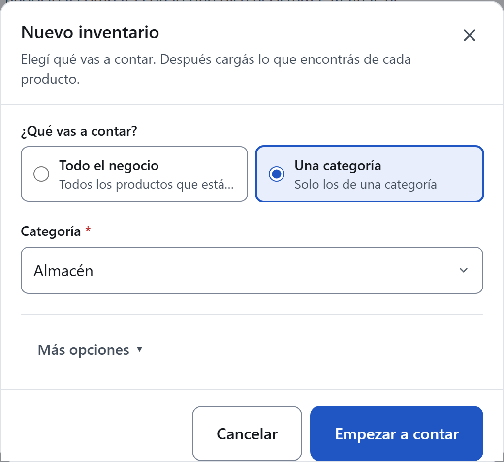
El sistema decía 10 paquetes de arroz y en la góndola hay 8: faltan 2.
11 · Inventario
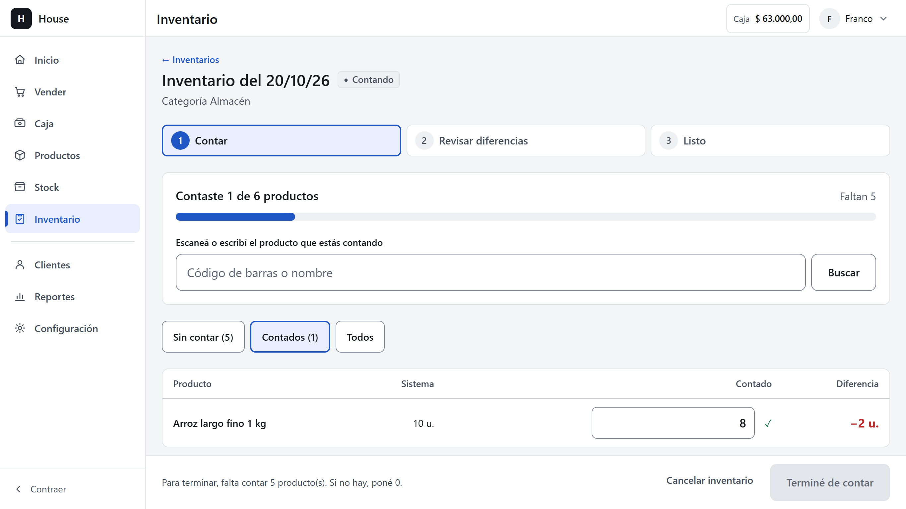
El conteo se guarda a medida que avanzás: si tenés que cortar, podés seguir más tarde desde Inventario. Si lo empezaste por error, tocá Cancelar inventario.
11 · Inventario
El sistema muestra cuántos productos faltan, cuántos sobran y cuántos coinciden, y la lista de los que tienen diferencia.
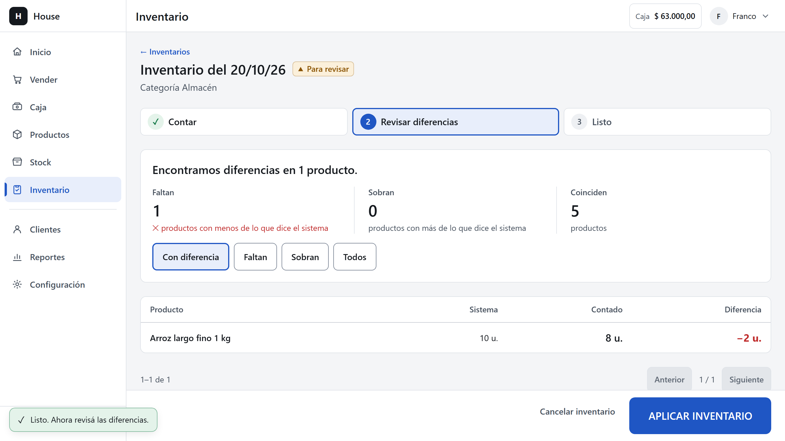
Tocá APLICAR INVENTARIO 1, leé el aviso y confirmá con Aplicar inventario. El stock del sistema pasa a ser lo que contaste.
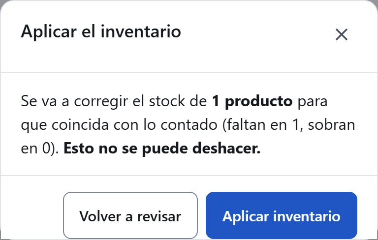
Arriba de todo está el Resumen de hoy; abajo, un reporte para cada pregunta.
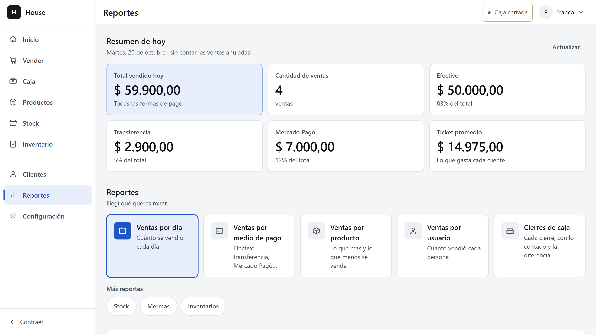
| Total vendido hoy | Todo lo vendido en el día, con todas las formas de pago. |
|---|---|
| Cantidad de ventas | Cuántas ventas se hicieron. |
| Efectivo · Transferencia · Mercado Pago | Cuánto entró por cada forma de pago. |
| Ticket promedio | Lo que gasta, en promedio, cada cliente. |
Las ventas anuladas no se cuentan. Actualizar trae los números al momento.
12 · Reportes
| Ventas por día | «¿Cuánto vendimos hoy? ¿Y cada día de la semana?» |
|---|---|
| Ventas por medio de pago | «¿Cuánto entró por Mercado Pago?» |
| Ventas por producto | «¿Qué producto se vendió más?» |
| Ventas por usuario | «¿Quién hizo las ventas?» |
| Cierres de caja | «¿Cómo cerraron las cajas? ¿Hubo diferencias?» |
Dentro de cada reporte elegís el período: Hoy, Últimos 7 días, Este mes o las fechas Desde y Hasta. En Más reportes están Stock, Mermas e Inventarios.
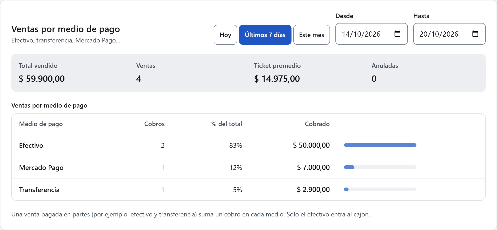
Antes de irte, seguí esta lista en orden.
Que no quede ningún producto en el carrito.
Mirá que no haya ventas con la forma de pago equivocada.
Todos los billetes y monedas del cajón.
Si no cuadra, volvé a contar antes de seguir.
Caja → Cerrar caja → Efectivo contado → Cerrar caja.
Tiene que decir Caja cerrada. Arriba a la derecha también.
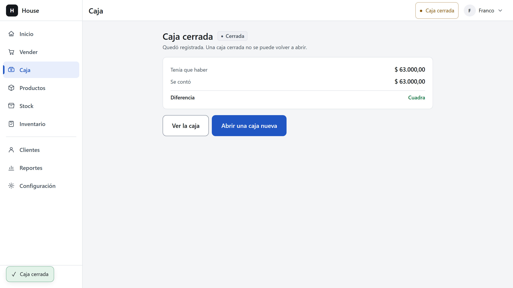
Los problemas más comunes y qué hacer.
| Problema | Qué hacer |
|---|---|
| No encuentro un producto | Buscalo por una parte del nombre o escanealo. Fijate que esté elegido Todos y no una categoría. Si no está cargado, cargalo (capítulo 4). |
| El lector no encuentra el producto | Ese producto no tiene el código cargado. Si es nuevo, tocá Crear producto. Si ya existe, buscalo por el nombre en Productos → Editar → pasá el lector en Código de barras → Guardar cambios. |
| Me equivoqué agregando una unidad | Usá ←: quita una. En el carrito también sirve − o Quitar. |
| Me equivoqué en una venta ya cobrada | No se borra. Anotá el número de venta y avisale al responsable para que la anule. |
| No me deja vender | Revisá que la caja esté abierta. Si en Vender aparece La caja está cerrada, tocá Abrir caja. |
| La caja no coincide | Volvé a contar antes de cerrarla. Revisá vueltos, egresos sin registrar y ventas con la forma de pago equivocada. |
| El stock no coincide con la mercadería | Hacé un inventario de esa categoría (capítulo 11). |
| No sé qué pasó con una venta | Buscala en Ventas de hoy. Para días anteriores, Ver el historial completo de ventas. |
| No sé cuánto vendimos | Andá a Reportes: el Resumen de hoy está arriba de todo. |
| La caja figura abierta desde otro día | No vendas en esa caja: avisale al responsable para que la cierre. |
| Me olvidé la contraseña | Pedile al responsable que la restablezca. Al entrar vas a elegir una nueva. |
14 · Si algo sale mal
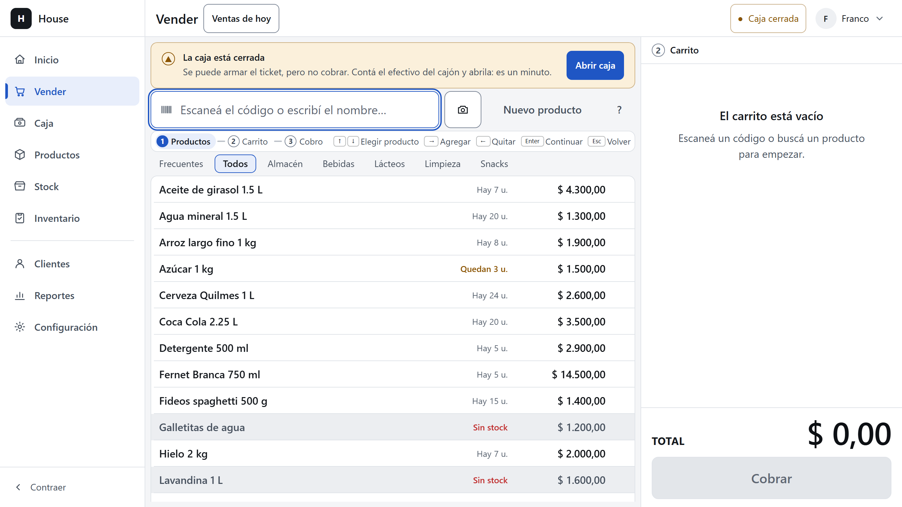
Para lo que esta guía no resuelva.
Si después de revisar esta guía el problema continúa, contactar al responsable del sistema.